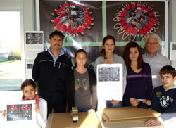

|
Dienstag, 27. Dezember 2011 |
Kindern und Jugendlichen in Ostafrika Zukunft geben
Holz- und Rollladenbau Hurrle spendet 1.000 Euro für Dürreopfer |
|
|
| Renate Baier und Heinz Wolf von terre des hommes schätzen die Partnerschaft mit Holz- und Rollladenbau Hurrle aus Gaggenau, vertreten durch Ulrike Dinger, Jens Tschirner und Simon Baumann (von links). |
„Die Unterstützung von Firmen, Geschäftsleuten und Institutionen aus der Region gibt uns Kraft und Motivation für unsere vielfältigen Aktivitäten“, so Heinz Wolf, Sprecher der rührigen Arbeitsgruppe terre des hommes Murgtal/Mittelbaden. Mehr als 100 Sponsoren und Spendern (2011 waren es 120) aus dem wirtschaftlichen Mittelstand bringen jedes Jahr etwa 20.000 € zusammen.
Die Sponsoren wie Holzbau Hurrle und Rollladenbau Hurrle aus Gaggenau schätzen an terre des hommes die effektive und nachhaltige Arbeit mit einem geringen Verwaltungsaufwand. „Wir bewundern, mit welchem Engagement die örtliche Arbeitsgruppe bei Kinderfesten, Basaren, Radbörsen und Konzerten dem Publikum etwas bietet, um über diesen Weg viele Spenden und Aktionserlöse zu erzielen“, so Ulrike Dinger von Holzbau Hurrle.
In diesem Jahr spendete Holzbau Hurrle 750 Euro und Rollladenbau Hurrle 250 Euro für jugendliche Dürreopfer in Ostafrika, um neben der Soforthilfe auch Unterstützung zum schulischen und beruflichen Leben zu erhalten, eine Hilfe zur Selbsthilfe, die terre des hommes mit einheimischen Kräften bewerkstelligt.
In den vergangenen zwölf Jahren übergaben die beiden Firmen Hurrle 13.250 Euro an terre des hommes für Kinder- und Jugendprojekte.
|
Sonntag, 11. Dezember 2011 |
"Da merkt man, wie gut es einem geht"
Wintersdorfer Schüler sind "Straßenkinder für einen Tag" |
|
|
| Alles andere als glänzend geht es den Millionen Straßenkindern auf der Welt. Das erfuhren Wintersdorfer Schüler bei ihrer Aktion "Straßenkind für einen Tag". |
Tim ist der "Sandwich-Man". Vorne und hinten trägt er ein Plakat, das die Passan�ten auf dem Rastatter Wochenmarkt auf den Aktionstag „Straßenkind für einen Tag" auf�merksam machen soll. Derweil haben seine Mitschüler von der siebten Klasse der Haupt�schule im Ried in Wintersdorf mitten zwischen Marktständen ihren Stand aufgebaut: Da gibt es selbst gebastelte Solitärspiele, getöpferte Teelichte und Tonwichtel sowie In�formationsmaterial über diesen speziellen Tag und die Situation der 100 Millionen Straßen�kinder auf der Welt.
Als Clou haben die Mädchen und Jungen einen Schuhputzstand aufgebaut, wo sich jeder gegen eine Spende sein Schuhwerk blank putzen lassen kann. Ein Mädchen hat gefilzte Feen und Engel dekorativ an Zweige gehängt, eine weitere Gruppe trägt einen Bauchladen vor sich her, aus dem heraus sie selbst Gebasteltes verkaufen und Spenden einsammeln. Diese sollen an terre des hommes gehen. Jedes Jahr ruft das internationale Kinderhilfswerk den Aktionstag „Straßenkind für einen Tag" aus, der eigentlich am 20. November stattfindet, am Jahrestag der UN-Kinderrechtskonvention. An dem Projekt beteiligen sich Schulklassen in ganz Deutschland und der Schweiz. Johanna Busch, Klassenlehrerin der siebten Klasse der Hauptschule im Ried, ist selbst Mitglied in „terre des hommes" und hat ihre Mädchen und Jungs einfach gefragt, was sie davon halten würden, bei der Aktion mit zu machen. Die Reaktion der Schüler war so eindeutig wie positiv. Vorbereitet wurde das Thema „Straßenkinder" im „Welt-Zeit-Gesellschafts-Unterricht", gebastelt wurde in der Schule und zu Hause.
Mit eiskalten Fingern fremde Schuhe poliert
Es ist noch kalt an diesem und schon bald sind die Donnerstagmorgen Finger eiskalt. „Da bekommen wir mal so richtig mit, wie das für andere Kinder jeden Tag ist". Auch dass sie Passanten ansprechen müssen, die oft lieber eilig weitergehen, als zu zuhören, gehört zu diesen Erfahrungen. „Aber das ist ganz gut", sagt Florian, „da merkt man, wie gut es einem geht". Dominik und Erik ergänzen: „Da gibt es Kinder, die zu arm sind, zur Schule zu gehen". Auch solch ein Projekt unterstützt terre des hommes in Bolivien. In der „Fundaciön La Paz" können ehemalige Straßenkinder einen Schulabschluss machen und einen Beruf erlernen.
BNN 18.11.2011, BNN-Mitarbeiterin Martina Holbein
|
Sonntag, 11. Dezember 2011 |
Buch "New Generation" für Kinderrechts-Team Nojoud
Dank für vielfältiges Engagement für Kinderrechte |
Beim diesjährigen Adventsbasar in Kuppenheim überreichte Heinz Wolf von der Arbeitsgruppe Murgtal / Mittelbaden den Jugendlichen vom Kinderrechts-Team Nojoud das Buch "New Generation - Was uns Jugendliche im Murgtal bewegt". Im Namen aller Arbeitsgruppen-Mitglieder dankte er damit dem engagierten Team für das vielfältige Engagement der vergangenen Monate.
Kinderrechtsteam „Nojoud“ von terre des hommes Murgtal/Mittelbaden
Wir, Alina, Charlotte, Clemens, Dennis, Julika, Kathrin, Marie-Lena, Ronja, Sarah, Sophie und Timm, sind das Kinderrechtsteam Nojoud von terre des hommes. Im Februar 2009 haben wir das Kinderrechtsteam Nojoud gegründet. Wir wollen anderen Kindern helfen, denen es nicht so gut geht. Dabei haben wir das Angebot von terre des hommes wahrgenommen, ein Kinderrechtsteam zu gründen. „Nojoud“ für Rechte der Mädchen Nojoud ist ein Mädchen aus dem Jemen. Sie wurde mit 10 Jahren zwangsverheiratet und missbraucht. Normalerweise fügen sich die Mädchen und Frauen. Nojoud jedoch nicht. Nach zwei Monaten flüchtete sie an ein Gericht in Jemens Hauptstadt Sana. Somit hat sie die Scheidung erreicht, was in ihrer Heimat nicht normal ist. Sie erzählt ihre Geschichte in dem Buch „Ich, Nojoud,10 Jahre, geschieden.“ Nojoud war sehr mutig. Viele Kinder in schwierigen Situationen brauchen vor allem auch Mut und Hoffnung. Deswegen haben wir unser Kinderrechtsteam nach ihr benannt.
Informations- und Verkaufsstände
Mittlerweile haben wir schon mehrfach Kuchen verkauft, etliche Infostände und siebenmal die Aktion „Red Hand“ gemacht, um gegen den Einsatz von Kindersoldaten zu protestieren. So haben wir schon etwa 4.000 € gesammelt. Die Roten Hände übergaben wir am Tag der Kindersoldaten, dem 12. Februar 2010, Außenminister Guido Westerwelle in Berlin. Beim Kinderfest 2009 und bei den Herbstbasaren 2010 bzw. 2011 von terre des hommes Murgtal/Mittelbaden sowie wiederholt beim 1.-Mai-Fest der IG Metall Gaggenau beteiligte sich das Kinderrechtsteam. Wir sind auch seit Jahren Gast beim Schulfest des Tulla-Gymnasiums Rastatt.
Zeitungen zu „Kinderrechte“
Um auf die Problematik der Kindersoldaten hinzuweisen, haben wir eine Zeitung zusammengestellt und Kunstwerke (2 m x 1.50 m) geschaffen für eine eine Ausstellung zum Thema. Diese wurde schon mehrfach im Bundesgebiet präsentiert, die Drogerie-Kette „dm“ übergab uns dafür sogar 1.000 €. Aktionen und Konferenzen 2010 und 2011 Bei den tdh-Regionalkonferenzen in Karlsruhe und den Mitgliederversammlungen in Bonn. Aktuell arbeiten wir auch an der Kampagne „Kinder haften für ihre Eltern – ökologische Kinderrechte verwirklichen“ mit. Im Frankfurter Kindermuseum malten wir Banner, die im kommenden Jahr beim UN-Nachhaltigkeitsgipfel in Rio zu sehen sein werden. In der Eichelbergschule Gaggenau-Bad Rotenfels stellten wir Stelen zu demselben Thema her, die beim Tag des offenen Denkmals in der Landesakademie im Schloss Rotenfels sowie bei tdh open in Stuttgart große Aufmerksamkeit erweckten.
Nojoud beim „Internationalen Jugendnetzwerk“
Beim Jahrestreffen „Vamos“ der etwa 40 Kinderrechtsteams von terre des hommes und bei der Aktion „Jugendlawine“, womit eine Plattform gegründet wurde, um Kontakte zu Kindern und Jugendlichen untereinander und weltweit zu ermöglichen. Eingeplant sind auch direkte Kontakte. „Nojoud“ hat schon den ersten südamerikanischen Jugendlichen (Gonzalo aus Chile) im Sept./Okt. 2011 betreut.
Weitere Informationen:
|
Freitag, 02. Dezember 2011 |
Kinder aus Vogelperspektive
Neuer Kunstkalender von terre des hommes jetzt im Handel |
|
 |
| Siebtklässler der Realschule Gaggenau mit Ortsvorsteher Achim Rietz und Heinz Wolf (tdh) verpackten die Kalender „Schwarzwald Wunderwelten 2012" im Rahmen der Top SE-Woche (themenorientiertes Projekt soziales Engagement) |
Der Kinderkalender „Schwarzwald Wunderwelten 2012" - entstanden mit Schulkindern aus Forbach, Wei�senbach, Gaggenau, Gaggenau-Bad Rotenfels und Bühl, kommt im Murgtal sehr gut an.
Der renommierte Berliner Fotograf Jan von Holleben hat 250 Jungen und Mädchen auf den Boden gelegt und aus respektabler Höhe schö�ne Wunderwelten geschaffen.
Die Idee dazu hatte Achim Rietz, Ortsvorste�her aus Gausbach: „Jährlich ein Kinderkulturprojekt zu organisieren, verlangt viel Motivati�on. Diese hole ich mir ganz stark aus dem Bewusstsein, damit Kindern zu helfen, die, nicht wie ich, auf der Sonnenseite der Welt geboren sind."
„Über's Internet haben wir bereits mehr als 100 Exemplare verkaufen können", so Heinz Wolf von terre des hommes Murgtal/Mittelba�den, „und wir gehen davon aus, dass auch wei�terhin viele Gaggenauer und Murgtäler mit dem Kauf des interessanten Kalenders das vi�etnamesische Schulprojekt „Muong Lat" unterstützen".
Stolz sind die Initiatoren des Ka�lenders, dass dieser sogar bei Spiegel online ausführlich beschrieben wird und ihm die Zeit�schrift Eltern Family in der Novemberausgabe sieben Seiten widmete.
Kalender im Handel
Der Preis beträgt 17 Euro (davon 14 Euro für das tdh-Projekt "Schulen für Muong Lat" für Kinder ethnischer Kinderheiten und das Trinkwasserprojekt "Don Phong Phu" in Vietnam)
Verkauf:
- Gaggenau: Bücherwurm, Haupt�straße 83; Hofstätte, Fußgängerzone; Krauss Schreibwaren, Hauptstr. 51
- Gausbach: Ortsverwaltung, Kindergarten;
- Weisenbach: Öffentliche Bü�cherei;
- Kuppenheim: Fotostudio Cieminski, Friedrichstraße 17
- E-Mail: info@tdh-murgtal.de
Weitere Informationen:
|
Freitag, 02. Dezember 2011 |
20x Märchenfee für terre des hommes
Jutta Häuser-Hartung |
Die bekannteste Märchenfee im Landkreis, Jutta Häuser-Hartung, unterstützte bereits 20 Mal den Adventsbasar von terre des hommes. Ihre Märchenlesungen sind bei Kindern und deren Eltern immer äußerst beliebt und rege besucht. Als Dank überreichte ihr AG-Mitglied Barbara Wachsmuth beim diesjährigen Basar in Kuppenheim eine Flasche Cremant.
|
|
|
|
 Ansprechpartner Ansprechpartner
|
|
Wolfgang Deppisch
(Projektinfos)
Tel. 07222 / 32927
Heinz Wolf
(Sponsoring, Allgemeines)
Tel. 07225 / 75543
weitere Ansprechpartner
|
|
Erlöse
1992-2012
|
|

Jahr |
Euro |
1992 |
70.000 |
1993 |
75.600 |
1994 |
83.883 |
1995 |
69.617 |
1996 |
51.412 |
1997 |
61.749 |
1998 |
60.333 |
1999 |
68.742 |
2000 |
85.492 |
2001 |
106.375 |
2002 |
78.937 |
2003 |
84.027 |
2004 |
76.662 |
2005 |
149.941 |
2006 |
84.497 |
2007 |
105.958 |
2008 |
104.053 |
2009 |
100.833 |
2010 |
107.254 |
2011 |
103.600 |
| 2012 |
158.250 |
| 2013 |
163.420 |
1977-2013 |
mehr als 2,7 Mio. € |
|
Detailansicht der Erlöszahlen |
|
|


;)
;)
;)
;)
;)
;)
;)
;)